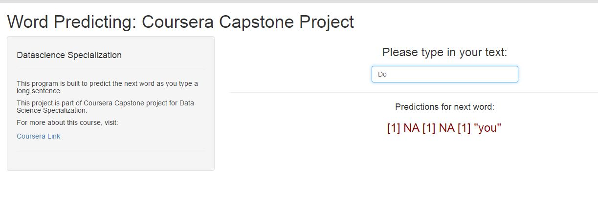

- The main objective of this project is to build a working predictive model. For that we analyze a large corpus data set provided by swiftkey.
- Demonstrate the model through Shiny App
Pratigya Subedi
Random Sampling of the corpus
datacleaning by removing numbers unnecessary words,stemming, removal of html tags, emails, punctuations white space etc.
N-gram tokens were created for the data sample
The N-gram tables are used to perform predictive analysis for the user inputs
The shiny app is avaliable at : https://pratsubedi.shinyapps.io/WordPredicting/
